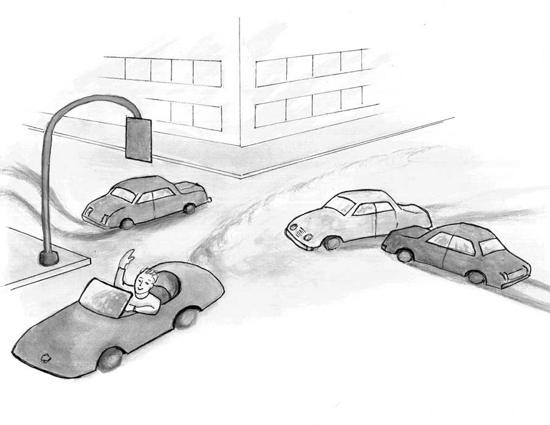

法律之下的自由……是以这一观点为依据：当我们遵守那些不管实际上是否会应用到我们身上而被判定出来的一般的抽象准则时，我们并不会屈从于他人的意志，因而我们是自由的。（《自由宪章》，哈耶克，1960）
如我们之前讨论的，我们享受的现代繁荣源于对全世界数亿人的分散知识的利用。这些知识往往细碎、局部、变化很快。没有任何政府能够收集这些信息、加以理解并据之有效地做出决策。目前已知的唯一有效地发现、理解这些信息并据之高效行动的办法就是依赖亿万人各自去发现零碎的信息并加以独立运用。通过把发现和使用信息的任务拆分给亿万人，每个人需要吸收、利用的知识就不会超出人类的能力范围。
理解以下这点很重要：如果没有自由，个体行动就会受限于政府权威。因此不自由的人寻找并利用零碎、局部性的知识的能力就弱于自由的人。
把发现并利用零碎知识的任务分拆给亿万人的一个重要理由在于没有任何中央权威可以明白怎么安排人们去找到这些知识，中央权威也不可能知道人们会发现些什么样的知识。那问题来了，如何确保没有无比智慧、全知全能的中央权威指导的自由人能够找到这些知识并加以有效利用呢？我们如何确保自由人不会以损害公众利益的自利方式行动呢？
答案部分在于我们确实预期人们会以自利的方式行动，但他们自利的行为最终会使公众受益。市场经济下，生产者希望变得尽可能富裕，为此他们必须与其他生产者竞争来赢得消费者。这个体系在经济上奖励那些满足消费者的人，惩罚那些做不到的人。答案的另一部分在于法治。法治是由平等适用于每个人（甚至政府官员）的不偏不倚的规则组成的体系。如果每个人都受制于相同的规则，就没有人能扭曲这些规则以谋私利。
一个中立的规则指的是它不是为了获得某种特定结果而制定的。中立的规则只限制那些公认的有害行为。这些规则一般是关于“你不该做什么”而不是“你被命令去做什么”。
关于高速公路的规则就是个很好的例子。关于限速和红绿灯的交规并不是为了指示司机开去特定地点。具体的目的地、该开哪条道，都是由司机自行决定的。道路法规不是为了决定司机该去哪、怎么去的，而是为了在目的地和路径方面给予每位司机最大选择权的情况下，使他们尽量安全可靠地到达目的地，同时也要保证所有其他司机的安全。
这种保障意味着对每个司机施加同样的规则。假如某些司机（比如红头发的司机）可以随意地无视红绿灯，那红绿灯对其他司机的价值将会大打折扣。一个面对绿灯的司机仍然得减速观察以确保没有红头发司机正在通过。交通事故将会增多而车流速度将会减慢。
公正地对每个司机运用规则会让司机们形成其他司机会如何行动的可靠预期。北美的司机们都预期其他司机也会靠右行驶，结果所有人都可以开的更快了，因为他无需留意是否会和靠左行驶的车迎面撞上。同样的道理适用于红绿灯、避让标志、停车标志、和许多其他司机们一般下意识就会遵守的标志。这些道路交通法规引导着每位司机以符合其他司机预期的方式行动。
当然，这些规则并不完美，有时候还是会有人违规。时不时的违规导致了交通事故。尽管偶尔有人闯红灯或者逆行，这些规则依然是道路上的主流规则。如果司机们对交通规则的遵守程度有信心，他们就会毫不犹豫地开着车去追求他们各自的人生目标。
但是如果司机们失去了这种信心，开车就变成了比较没用的运输方式。前例中被允许闯红灯的红头发司机可能可以更快地到达目的地，但其他大部分司机会发现开车没那么有用了。人们会更少开车，也会在在路上遇到更多的困难。道路法规的腐蚀使得人们无法实现像公平情况下那么多的出行目标。
对交通法规适用的这套逻辑也适用于更一般的法律法规。当所有人，包括最高级政府官员，也得遵守通用的公正的法律，每个个体就能尽可能多地选择自己的目标，并且有着最大的可能去实现它。真正的平等大行其道。。
这种公平是法律面前的公平。它并不保证每个人都获得相同的结果，但它确实保证没有个人或组织的利益被特别对待。结果是不会有一些个人或组织的利益因另一些个人或组织的特权而牺牲。这样的社会就是真正的法治而非人治。
过去约200年里法律面前人们越来越平等，这削弱了诸如出身、肤色、宗教信仰等个人身份的重要性，它们对个人生活的成败不再有那么大的影响。个人成败更多地取决于性格和品质，即与他人平等合作，特别是为市场生产有用的商品和服务，的能力。因此，法治不仅在确保我们个人自由上扮演关键角色，也是给尽可能多的人带来繁荣的关键角色。